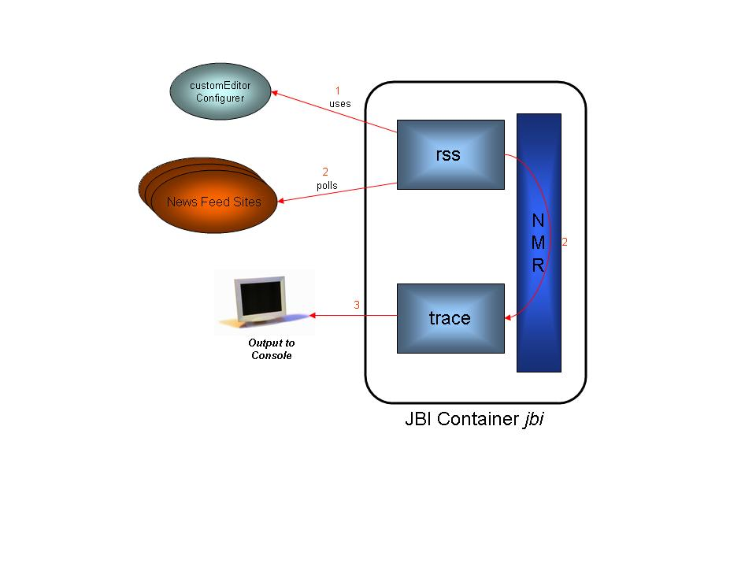

|
|
|
|
|
|
|
Download | JavaDocs |
OverviewCommunityDocumentation
ReferenceFeatures
Integration
ServiceMix Components
ToolingOther JBI softwareRelated ProjectsSupportDevelopers
Tools we use
|
Overview of the ServiceMix 2.x RSS Binding ExampleThe following procedure describes how to run the RSS Binding example in ServiceMix and provides details regarding what the RSS Binding does. For information on the business use case, please refer to: Use Case for RSS Binding
The source code for the RSS Binding example is located in the ServiceMix installation directory under the examples\rss-binding directory in the servicemix.xml file. It is recommended that you refer to the source code while reading this document.
Running the RSS Binding Example
Stopping the RSS Binding ExampleTo terminate the RSS Binding example, type "CTRL-C" in the command shell in which it is running and answer "y" to the "Terminate batch job (y/n)?" question.
How it WorksThe diagram below illustrates the flow of messages through the RSS Binding components:
RSS Binding Example Message Flow Diagram 
Output from running [servicemix_install_dir]\bin\servicemix servicemix.xml looks like the following: <item> <title>Bush supporters' cars allegedly defaced by war veteran</title> <link>http://www.cnn.com/rssclick/2005/US/12/16/bush.vandalism.ap/index.html?sec tion=cnn_topstories</link> <description>Read full story for latest details.</description> <pubDate>Sat, 17 Dec 2005 00:52:01 GMT</pubDate> <guid isPermaLink="false">http://www.cnn.com/rssclick/2005/US/12/16/bush.vandali sm.ap/index.html?section=cnn_topstories</guid> </item> <item> <title>Stern says goodbye to terrestrial radio</title> <link>http://www.cnn.com/rssclick/2005/SHOWBIZ/12/16/stern.last.day.ap/index.htm l?section=cnn_topstories</link> <description>Read full story for latest details.</description> <pubDate>Sat, 17 Dec 2005 02:13:07 GMT</pubDate> <guid isPermaLink="false">http://www.cnn.com/rssclick/2005/SHOWBIZ/12/16/stern.l ast.day.ap/index.html?section=cnn_topstories</guid> </item> DetailsThe following table provides more details about the function of each component and bean in the servicemix.xml file:
Related DocumentationFor more information on the following topics please see: We support working with RSS and Atom via the Rome For a brief explanation of the XML tags in the servicemi.xml file, please see: |